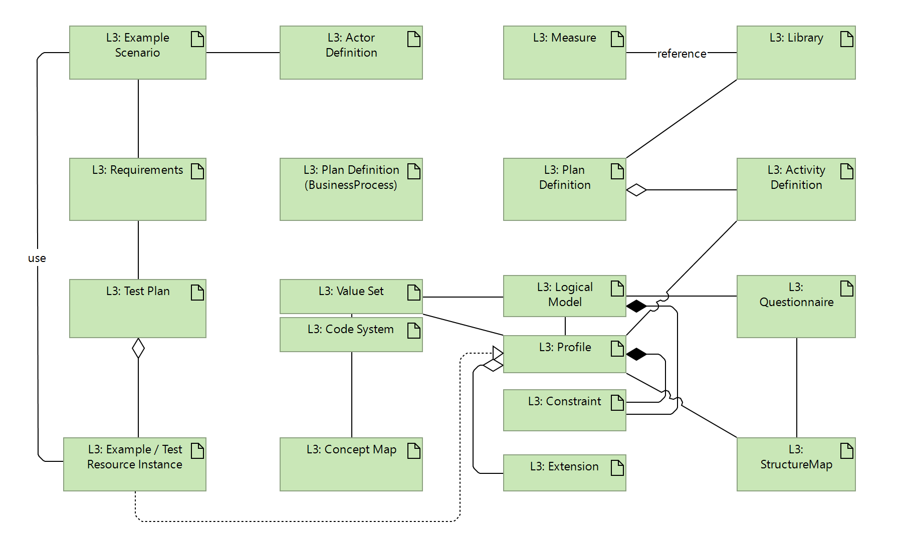

DRAFT SMART Guidelines L3 SOP
0.2.1 - CI Build

DRAFT SMART Guidelines L3 SOP
0.2.1 - CI Build

DRAFT SMART Guidelines L3 SOP, published by TBD. This guide is not an authorized publication; it is the continuous build for version 0.2.1 built by the FHIR (HL7® FHIR® Standard) CI Build. This version is based on the current content of https://github.com/WorldHealthOrganization/smart-ig-starter-kit and changes regularly. See the Directory of published versions
L3 authors are expected to create the necessary artifacts to cover the entire L2 specification and demonstrate a working SMART Guideline. This includes several types of artifacts and possibly narrative content.
| Content Type | L2 Representation | L2 Location |
|---|---|---|
| Health Interventions | Narrative | input/pagecontent |
| Generic Personas | Narrative | input/pagecontent/personas.md |
| User Scenarios | Narrative | input/pagecontent |
| Processes | Narrative | input/pagecontent |
| Data Elements | Narrative | input/pagecontent |
| Spreadsheet | TBD | |
| Decision Tables | Narrative | input/pagecontent |
| Spreadsheet | TBD | |
| Scheduling Logic | Narrative | input/pagecontent |
| Spreadsheet | N/A | |
| Indicators | Narrative | input/pagecontent |
| Functional Requirements | Narrative | input/pagecontent |
| Non-functional Requirements | Narrative | input/pagecontent |
The diagram and table below shows the content types that are to be created as part of the L3 authoring process.

| Content Type | L3 Representation | L3 Location | Procedure |
|---|---|---|---|
| Health Interventions | n/a | n/a | n/a |
| Generic Personas | ActorDefinition | input/actors | Actors |
| User Scenarios | ExampleScenario | input/scenarios | Scenarios |
| TestPlan | input/testing | Testing | |
| TestScript?? | input/testing | Testing | |
| Example instances | input/testing input/examples |
Examples | |
| Processes | FHIR PlanDefinition | input/plandefinitions | Plan Definitions |
| FHIR ActivityDefinition | input/processes input/activitydefinitions |
Activity definitions | |
| Elements | Logical Data Model | input/models | Logical Models |
| FHIR Questionnaire | input/questionnaires | Questionnaires | |
| FHIR StructureMaps | input/maps | Structure Maps | |
| FHIR ValueSet | input/valuesets | ValueSets | |
| FHIR CodeSystem | input/codesystems | CodeSystems | |
| FHIR Profile | input/profiles | Profiles | |
| ConceptMap | input/conceptmaps | Concept Maps | |
| CQL Concepts | input/cql | CQL | |
| CQL Data Elements | input/cql | ||
| Decision Tables | FHIR PlanDefinition | input/plandefinitions | Decision Tables |
| FHIR Library | input/libraries | Concept Maps | |
| CQL | input/cql | CQL | |
| Scheduling Logic | FHIR PlanDefinition | input/plandefinitions | Scheduling Logic |
| Indicators and Measures | FHIR Measure | input/measures | Indicators |
| CQL IndicatorLogic | input/cql | CQL | |
| Functional Requirements | FHIR Requirements | input/requirements | Requirements |
| Non-functional Requirements | FHIR Requirements | input/requirements | Requirements |
For narrative, all files are in input/pagecontent and can be written in xhtml or markdown.
See the guidance on authoring narrative.
The canonical folder structure for all artifacts is:
For json or xml content, the file name SHALL be in the form
For fsh content, the file name SHALL be in the form
ResourceType/resourceid.fshThe input folders for the resources are:
input/scenariosinput/actorsinput/measuresinput/requirementsinput/processesinput/plandefinitionsinput/activitydefinitionsinput/testinginput/examplesinput/codesystemsinput/valuesetsinput/modelsinput/questionnairesinput/profilesinput/mapsinput/cqlinput/librariesTO DO: Decision Tables and Scheduling Logic? Should these represent the 16 types of objects?
For FSH, the folders are the same but in the fsh folder, e.g. input/fsh/scenarios, input/fsh/actors etc.
Resource IDs
.fmlResourceid is validResource-id is also valid, although not preferredfsh/Aliases.fshsee also versioning
TO DO: Adding artifacts, what goes into common-clinical, etc.